| 日付 | 2012年7月28日（土） - 2012年7月29日（日） | ||||
|---|---|---|---|---|---|
| 山域 | 草津周辺 | ||||
| メンバー | 家族（妻、長女・1歳） | ||||
| 山行形態 | 子連れ1泊2日テント泊 | ||||
| アクセス | 車 | ||||
| ルート (Map1) |
|
登山を始めたころに購入したガイドブックに白砂山という山が紹介されていた。
そのガイドを読んで以来、ずっと白砂山に惹かれていたのだが、
アクセスが悪い山であるため、なかなか行く機会がなかった。
快晴予報の週末、長い間懸案だった白砂山に行こうと思い立ち下調べを始める。
白砂山の麓の野反湖近辺は宿が充実していないため、
今回はテント泊に挑戦してみることにする。
1日目は嵩山に寄った後に野反湖に移動し、2日目に白砂山に登る計画だ。
週末に近づくにつれ天気予報は悪化していったが、何とか行けるだろうと判断し野反湖に向かう
1日目
ふるさと公園の駐車場に到着する。標高550m。
まだ時間が早いため閑散としている。
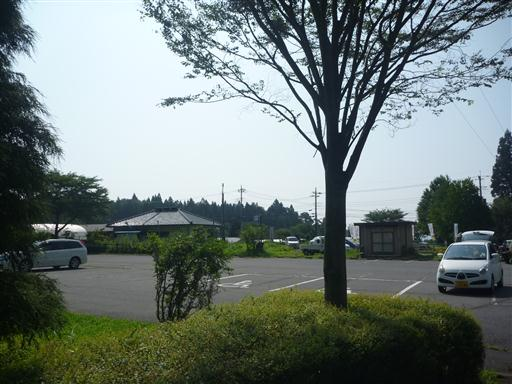
嵩山は標高は低いが岩場があり、楽しそうな山である。
見上げると駐車場からも岩峰が見えている。
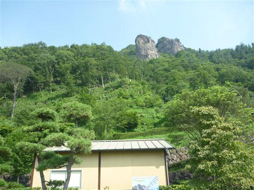
登山道入口に到着。信仰の山のため岩登りは行わないようにとの注意書きがある。
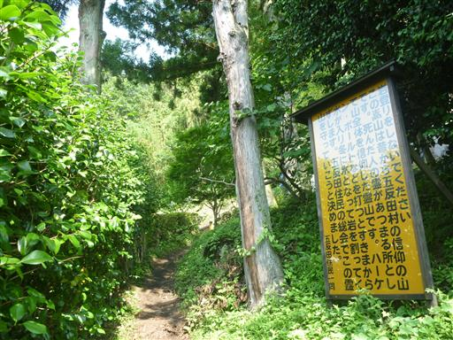
登山道入口付近にある大きな遊具施設。
子供が大喜びしそうな場所だ。大人でも楽しそうだ。
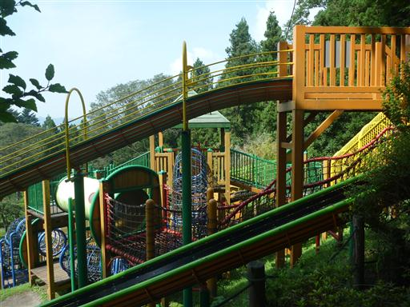
東屋に到着する。それにしても今日は暑い。
外を歩いているだけでも熱中症の危険があるような日だ。
このような日に低山に登るなど自殺行為だと少し後悔。
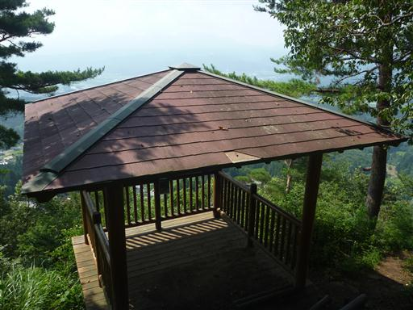
空は晴れているが景色はぼんやりと霞んでいてほとんど何も見えない。
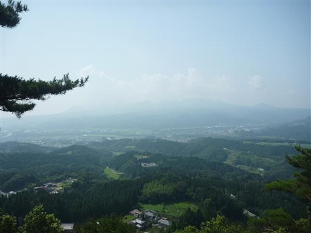
蝙蝠穴。虫が飛び交う陰気な穴だ。
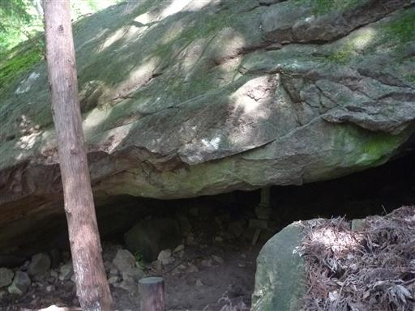
天狗の広場に到着。稜線に到達し、もうあまり登りはないためホッと一息。
すでに汗だくだ。
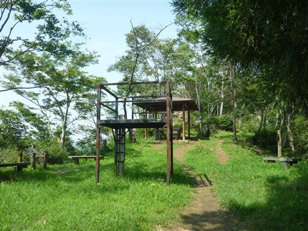
まずは小天狗に向かう。簡単な岩場を超えると小天狗だ。
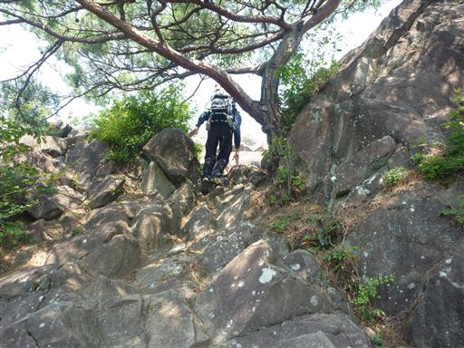
小天狗は小さな岩峰で頂上に祠が祀られている。
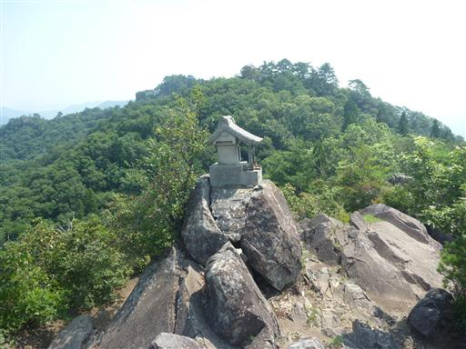
360度の展望が広がる場所だが、ここからの展望も霞んでいる。
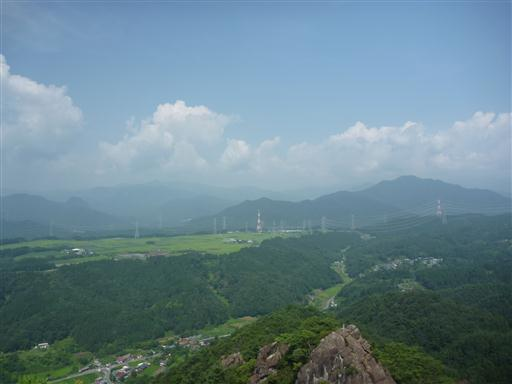
眼下に不動岩が見える。なかなか立派な岩峰だ。
次に目指すのはこの不動岩だ。
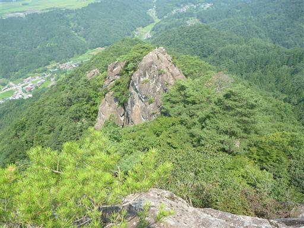
少し陰気な登山道を抜けると不動岩直下の岩場が現れる。
こちらの岩場は少し難易度が高い。
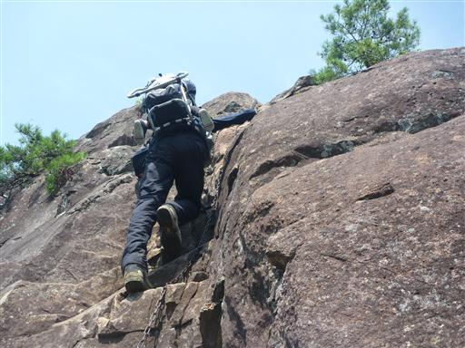
不動岩の頂上に到着。
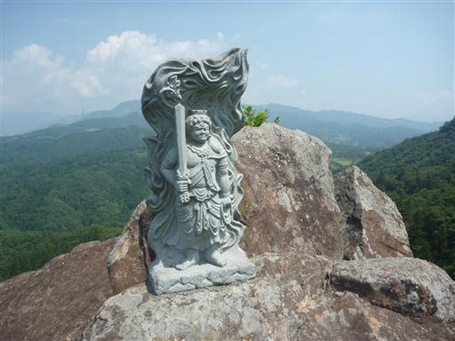
不動岩から小天狗を見上げる。真夏のため濃い緑に覆われている。
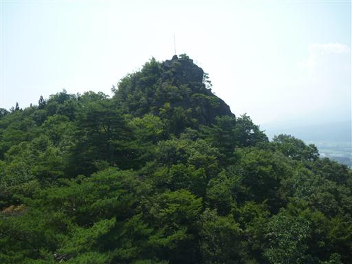
登山道には所々に石像が祀られていて番号が振られている。
いかにも信仰の山らしい。
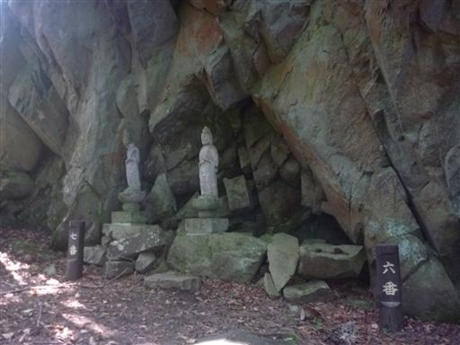
胎内くぐり。かなり細長い穴で細身の人でないと通り抜けるのは不可能そうだ。
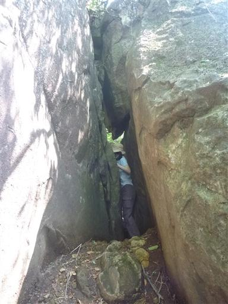
細長い穴を抜けた後も鎖などがあり、なかなか楽しい胎内くぐりだ。
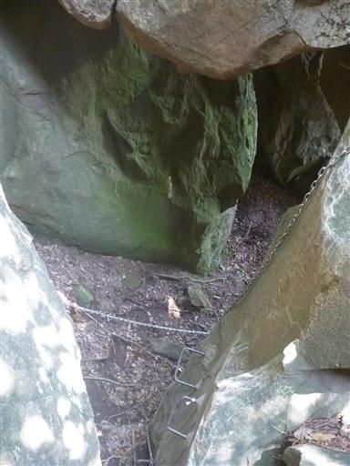
ここにもひっそりと11～13番の石像が祀られている。
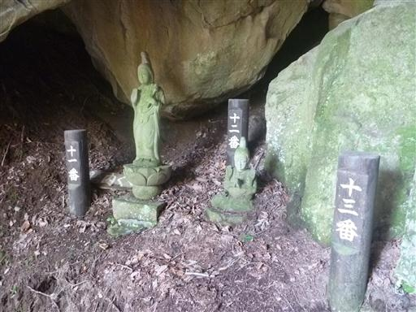
経塚に到着。コの字形に石像が整列している。
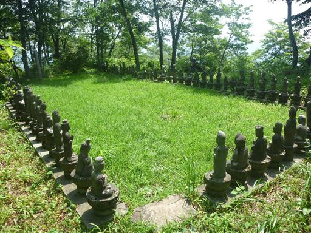
最後に嵩山（大天狗）への登りだ。ここから山頂まで長い長い岩場が続く。
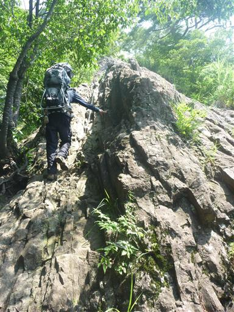
どこまでも続く長い鎖。
しかし岩場の傾斜は緩いため鎖を使う必要はほとんどなく、2本足で歩けるレベルだ。
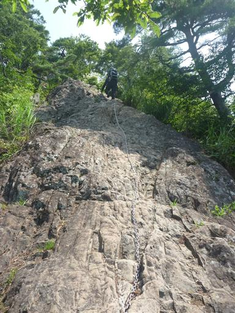
長い岩場を超えると最後に丸い岩が現れる。ここを登ると山頂だ。
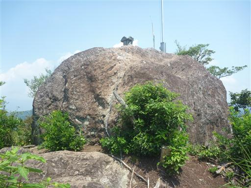
嵩山山頂に到着。標高789m。
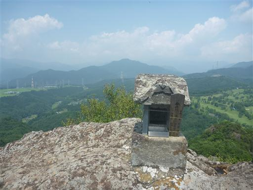
眼下にはゴルフ場が広がっている。
360度の展望が広がる山頂だが、日差しを遮るものがなく余りにも暑いので、
山頂直下の東屋で昼食をとることにする。

東屋に到着。ここに腰を下ろして昼食タイムだ。
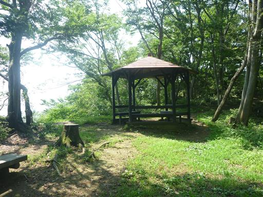
昼食をとって下山開始。
下山道にも見どころがあり、登山道の左手には見事な岩壁が広がっている。
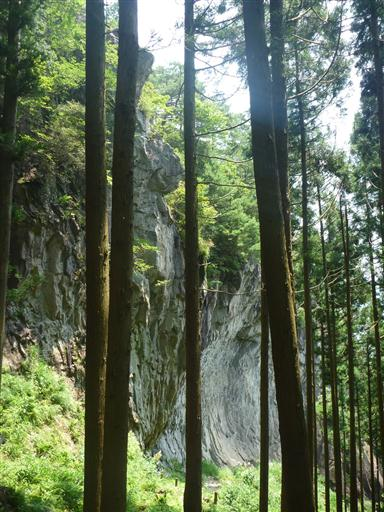
岩壁直下まで道は続いているが落石の危険から今は通行止になっているようだ。
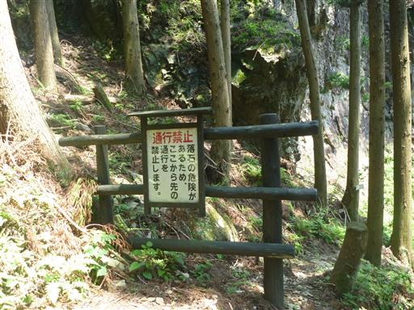
少し下って弥勒穴のある岩壁に到着する。
鎖場を登った後に岩場をトラバースする。
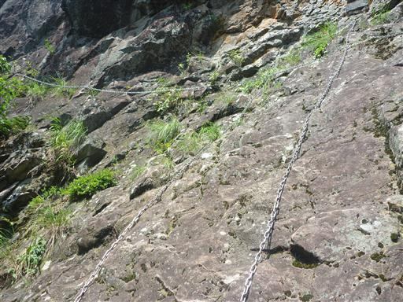
そこそこスリルのある岩場だ。こちらは落石の危険はないのだろうか…？
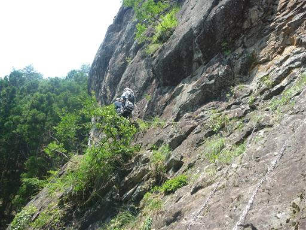
弥勒穴に到着。中に20番の石像が祀られている。
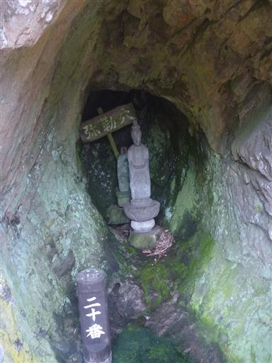
ふるさと公園に下山する。下山すると気温が一気に上がりとにかく暑い。
低山とは言え、山頂部は下界に比べると多少は涼しかったようだ。
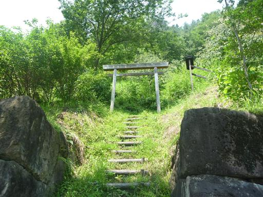
下山後に駐車場の側の親都神社に寄り道する。
県指定天然記念物の大ケヤキは上部がなくなっていて、なぜか屋根が取り付けられている。
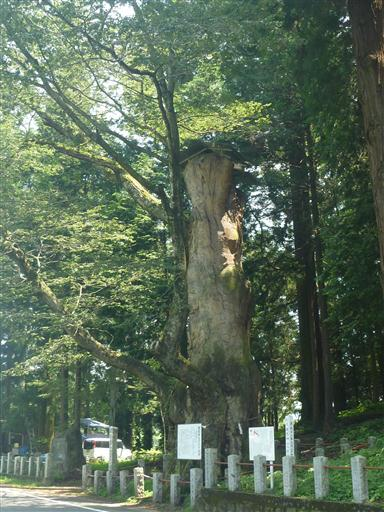
親都神社。立派な神社だがふるさと公園と違って境内は人影がない。
お参りをした後、車に戻って野反湖を目指す。
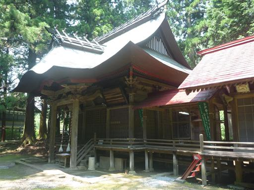
車で山間をひた走り野反湖に到着。
野反湖キャンプ場は駐車場から1km程度の場所にある。
リヤカーを使って荷物を運びテントを設営。
2～3人用のテントだが自分以外の人がこのテントに入るのは初めてだ。
子供はテントに入るのを嫌がり泣き叫んでいる…
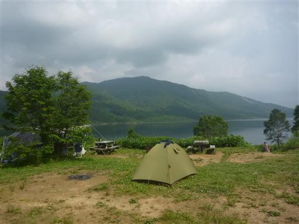
キャンプ場の前には野反湖の美しい湖面が広がっている。
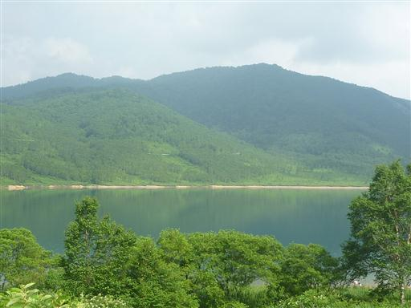
湖の畔に下りてみる。ダム湖とは思えないゆったりとした景色だ。
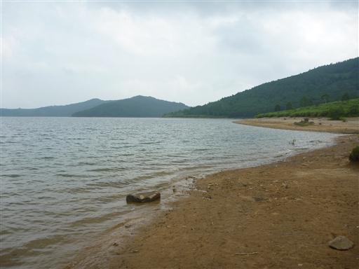
湖畔にはヤナギランの花が咲いている。
他にもアヤメ、ニッコウキスゲなどいろいろな花が見られる。
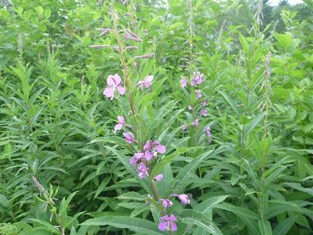
夕方に一雨降ったがすぐに止んだので、心配した雷雨にはあわずに済んだ。
テントが賑やかな子連れの大パーティに囲まれたため、静かな場所に設営しなおす。
明日に備えて早い時間に眠りに入る。
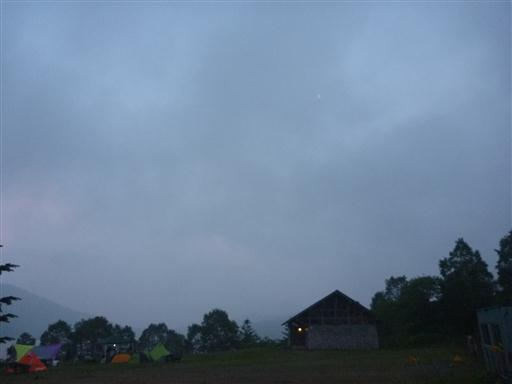